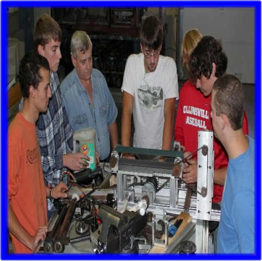

INDUSTRIAL MAINTENANCE/ELECTRONICS
|  |
Instructor: Dennis Lester |
Northeast Alabama Community College and the DeKalb County Technology Center have partnered to offer dual enrollment/ dual credit classes in Industrial Electronics and Industrial Maintenance while earning both high school and college credit. Many students are awarded scholarships provided by businesses and donors each year. Students who take classes during their junior and senior year in high school, as well as one summer term, may earn a short-term certificate in industrial maintenance. |
Have you ever wondered how a conveyor belt works?
The dual enrollment students attending Industrial Electronics/Industrial Maintenance classes at DCTC know.
Most people don’t realize the complexity of the machinery used in modern industry. Take the conveyor belt for example; it moves a product from point A to point B in a facility. This is probably where most individuals’ knowledge ends. Obviously, the conveyor consists of a motor and a belt, but that’s too simple! Read on to see for yourself just how complicated a conveyor belt can be.
The modern conveyor technician is responsible for the following:
1. Drive system –motor, electrical supply, motor controls for stopping, starting, speeding up, slowing down, emergency stop, thermal over-load protection, current limiting devices such as fuses and breakers, sensing devices such as photo-optics, limit switches, proximity switches, timers, counters, shaft encoders (tells RPM), preventative maintenance for electronics, last but most important, an extensive electrical knowledge to make it all work together.
2. Driven system—flat belt for the product to ride on, adjustment devices to make the belt run straight, pulleys, gears, sprockets, V-belts, or chain to connect the conveyor to the drive system, an extensive knowledge of mechanical theory utilizing basic math functions to derive the desired ratio between pulleys, gears, or sprockets. In addition, one must have knowledge of proper belt deflection and alignment, chain tension, gear spacing, preventive maintenance including lubrication, shaft inspection and alignment, bearing inspection and proper replacement techniques, chain inspection and alignment, as you can see this list can be rather extensive.
The students at DCTC are learning real world application for their course material.
Where do you fit in? Are you good with your hands? Do you enjoy using wrenches? Are you interested in electronics? Do you desire a rewarding career in the Industrial Electronics / Industrial Maintenance field?
Click Here to